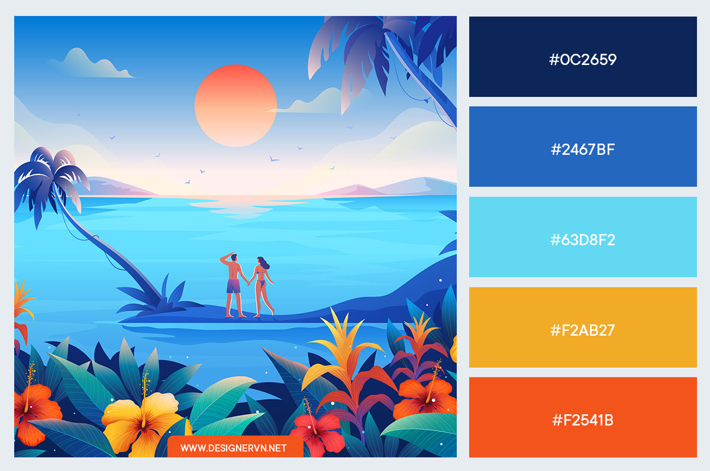

Đố em biết anh đang nghĩ gì ?
Tô đậm
Đi đường quyền có gạch ở chân :v
Dẫn hình ảnh ngay trong thư mục:

Dẫn hình ảnh thư mục ngoài:

Dẫn hình ảnh từ link trực tiếp:

Welcome to Facebook :))
Cái này để chia đoạn. それから、日本人は このページを読むことができます。
素晴らしい ですね。私は インーターネッートで 新聞を書くことが ありますか、ほんとうに わかりましたね。

Hình như tôi chiều em quá nên em hư !!!